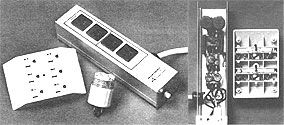
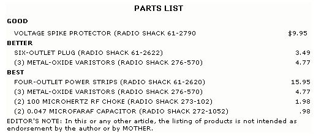

Protect your sensitive electronic equipment from lightning damage by building your own ...
"Snap, crackle, pop" may be familiar breakfast sounds to some people, but for many others, such noises signal disaster ...lightning disaster.
Each year, the damage done by lightning runs into the millions of dollars, and the human casualties number in the thousands. As a matter of fact, more people are killed each year by this form of electric discharge than by all other natural disasters combined.
Lightning wreaks the most financial havoc, however, when it damages electronic equipment. Stereos, televisions, and home computers succumb to the effects of this force daily. And the most perplexing part of the problem is that lightning doesn't even have to strike an appliance directly to inflict damage. Flashes many miles away can turn hundreds or thousands of dollars' worth of circuitry into high-tech junk.
VOLTAGE SURGES
The problem comes from the utility-fed electricity used to run your equipment. The power delivered to your home has probably traveled through hundreds of miles of wire and several substations before it reaches you.
When lightning strikes, it does so with the force of millions of volts. You can actually hear lightning discharge several miles away (and I don't mean the thunder) if you listen to an AM radio during a thunderstorm. The highvoltage discharge generates radio waves that are picked up by your radio's antenna.
In a similar fashion, the sprawling utility grid can pick up static from lightning. When a strike comes close to a power line, the wires act as a large antenna and absorb part of the energy. A power surge as high as 2,500 volts can be injected into the grid in this manner. These voltage surges travel down the wires into your home and right into appliances, where they can destroy sensitive electronic parts ...even though the equipment is turned off.
Fortunately, you can protect your costly possessions from this threat without having to unplug them every time the sky clouds over. There is an electronic device called a metaloxide varistor (MOV for short) that can serve as a watchdog on the voltage of your AC line.
As long as your household voltage remains within normal limits, the MOV does nothing. Let the voltage suddenly surge to 130 or higher, though, and the MOV swings into action. What it does is absorb the extra voltage created by the spike and dissipate it as heat. When the line voltage returns to normal, the MOV goes back on standby. The entire sequence happens in about onemillionth of a second.
Metal-oxide varistors are inexpensive and usually are readily available (see the sidebar for access information). The amount of protection you need, however, will depend on the type of equipment you have. Television sets are more sensitive than radios, and computers are extremely vulnerable. Therefore, I'm providing you with three types of MOV systems to choose from, according to the degree of protection you need.
GOOD
The simplest protective device requires no construction at all on your part. It consists of a single "MOVed" plug that is inserted into an outlet and has the appliance cord plugged into it. This product, which is solo' by Radio Shack under the name Voltage Spike Protector (part number 61-2790), contains a single MOV device connected across the hot and the neutral power lines. Any transient exceeding 130 volts is readily suppressed by the MOV and is thus prevented from . r, tering the equipment.
Unfortunately, this simple device doe protect against all forms of power surge. 1; the lightning strike is such that voltage spike, of equal proportions are induced in both the hot and neutral wires, the MOV won't sent the change
BETTER
To remedy this shortcoming, I've \e con structed a surge protector that contains three MOV devices. One is wired across the ho and neutral lines, just as is the case with the Voltage Spike Protector. To keep the spike that are common to both lines from creeping into the system, though, I've added two other MOV's-one from each line to the ground wire. With this arrangement, the output t ol: age can never be more than 130 volts iii direction.
You can duplicate this surge protect a matter of minutes, once you've collected t t proper parts and tools. First, you'll need ,; sixoutlet expansion plug. Radio Shack', 61-2622 is one example. Remove the card board back from the outlet by unscrewing the four coarsely threaded rivets on the back w the device.
When you have the back cover off, your, faced with six copper strips that are used to expand a two-outlet socket into a six-outlri one. If you have the misfortune, as I did, o: having the metal strips tumble into hands as you remove the cardboard, don't panic. Simply shove them back into their slots with your thumb.
The next step is to solder the MOV devices into place. There's plenty of room inside the plastic housing to accommodate them. Using the "better" model in the photo as your guide, slip the MOV's into position. Now clip the wire leads. to length, and solder the MOV's to their respective copper strips. One MOV goes across the thin prongs, another connects between one thin prong and the ground connection (the strip with the round insert), and the third is soldered between the remaining prong and the ground. Don't worry about which direction they're wired in; just be sure that no leads are touching that might short the circuit.
Replace the cardboard backing, remove the wall plate from the wall socket you intend to use, and plug in your new outlet protector. Fasten the adapter in place with the long center screw that's provided, and you're finished. Any appliance that's plugged into this outlet is automatically protected from all forms of voltage surge.
BEST
Even the protection offered by the threeMOV outlet is insufficient in some cases. A personal computer, for example, not only is allergic to voltage spikes but is also sensitive to "noise" on the AC line.
Noise can best be described as unwanted voltage excursions that are under the activation threshold of the MOV protector. In other words, they are small signals that ride on top of the standard power voltage. They aren't particularly harmful in most cases, but they can scramble the data contained in a computer's memory chips. Words may come out "mizpeled," and, in some cases, information is lost altogether.
How does this noise get on the line to begin with? It's put there by other electrical equipment. Refrigerators, air conditioners, vacuum cleaners, and television sets all generate electrical pulses that find their way into your electrical system. In fact, your computer's printer may be the worst offender. A big reason for this is that the printer and the computer often share the same outlet, so the noise has an easy path into the machine's memory.
To remove unwanted noise from an AC line, you need a filter-which brings us to the third design. In addition to being MOVprotected, the "best" option incorporates an effective filter. The entire project can be built inside a Radio Shack Plug-in Power Strip (part number 61-2620), though similar units are available from most electronics and hard ware stores. These power strips feature a heavy-duty cord that expands to four outlets housed in a sturdy metal case. As an added feature, the power strips come equipped with a built-in 15-amp circuit breaker.
To modify one of the devices, you must first split the aluminum housing in half by removing eight screws, four in each of the two end plates. However, this is easier said than done. For some reason, the screws have recessed, square-drive heads that require a special tool. I didn't consider the tool to be worth buying, so-after several false starts-I devised a way to get the screws loose. By filing slots in the fasteners' heads with a triangular file, I was able to remove them with an ordinary slotted screwdriver. After I finally did get the screws out, I promptly tossed them away (I replaced them with conventional Phillips-head items).
Once the end plates have been removed, the lower half of the metal case slides off, exposing the undersides of the outlets. Begin the modification by removing a short strip of insulation from each of the three wires connecting the first two sockets together (looking at it from the circuit-breaker end). A razor knife works best. Now solder three MOV devices to these wires, bridging one across the black and white wires, one across the black and green, and one across the white and green. After soldering, bend the leads so the MOV's rest against the backs of the outlets, as shown in the photograph.
Next, work on the link that connects outlets two and three. With a pair of wire cutters, completely remove a section of the black and white wires between the two outlets, leaving short pigtails connected to the second socket. Strip the insulation from the pigtails. Do NOT cut the green wire!
This last operation divides the four outlets into two pairs. In the severed line, you'll insert a filter to remove noise from the last two outlets. But before you can do that, you have to cut a small piece of insulation from the three wires that join sockets three and four, just as you did when installing the MOV's.
After stripping the wires between three and four, solder an RF choke between the black pigtail on socket two and the freshly exposed black wire between three and four. Then do the same for the white wires. Finally, connect a 0.047 microfarad capacitor across the green and black wires and a second 0.047 microfarad capacitor across the green and white leads, laying the capacitors out of the way after installation.
After inspecting your work for shorts, reassemble the case. Then plug the cord into a convenient outlet, and you're ready to go. When using the power strip for a computer, plug the printer into outlets one or two and the computer itself into three or four.
And there you have it: three different degrees of protection from snaps, crackles, and pops. Remember, though, that none of these devices is a lightning arrester. In the rare instance when lightning actually strikes your house, damage will ultimately result. For everyday voltage transients, however, surge protectors are an effective, inexpensive form of insurance.
|
 Depending on what equipment you need protected from voltage surge, you can employ one of three devices. One is stock; the other two are modified. ""Better"" (right in photo): Metal-oxide varistors for surge protection. ""Best"" (left in photo): Metal-oxide varistors, RF chokes, and capacitors for surge protection and filtering. Both surge protectors use MOV protection between hot and neutral lines and between both legs and ground for full isolation from transients. |
 |
|